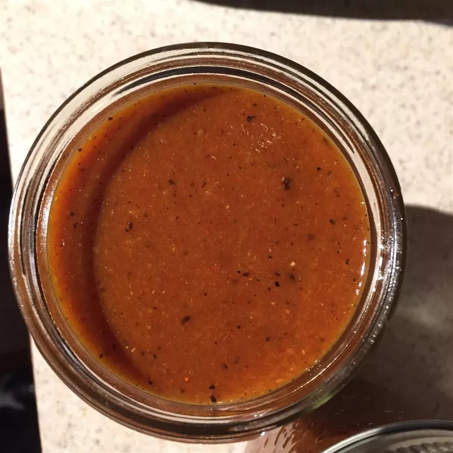

Return Home
Hot Sauce

Using fewer habanero peppers can reduce the spiciness in this extremely hot habanero hot sauce.
The sauce works wonders as a pick-up for Bloody Mary drinks. Flavors meld wonderfully and the sauce keeps nicely for a long time. Warning: A dash is all you need and it is best to use gloves when handling the habanera peppers.
Ingredients
- 12 habanero peppers, seeded and chopped
- 1 (15.5 ounce) can sliced peaches in heavy syrup
- 1/2 cup dark molasses
- 1/2 cup yellow mustard
- 1/2 cup light brown sugar
- 1 cup distilled white vinegar
- 2 tablespoons salt
- 2 tablespoons paprika
- 1 tablespoon black pepper
- 1 tablespoon ground cumin
- 1/2 teaspoon ground coriander
- 1/2 teaspoon ground ginger
- 1/2 teaspoon ground allspice
Steps
- Place the peppers, peaches, molasses, mustard, brown sugar, and vinegar into the container of a food processor or blender.
- Measure in the salt, paprika, pepper, cumin, coriander, ginger, and allspice.
- Blend until liquefied.
- Pour into clean jars, and refrigerate overnight before using.